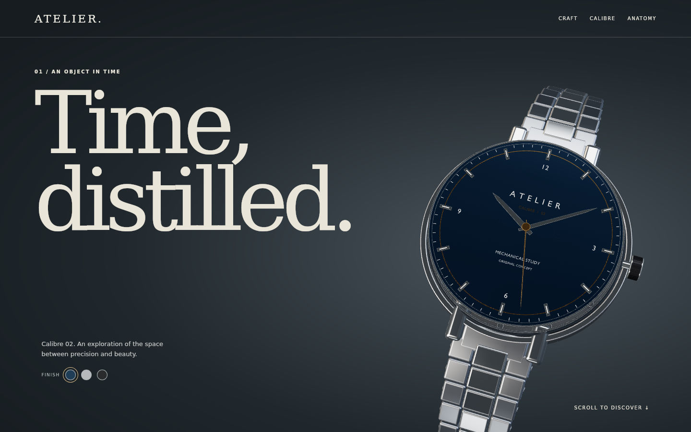

LAB / 3D · PRODUCT · SCROLL
ATELIER — V18 Compact
One continuous WebGL watch travels through editorial chapters, reveals its mechanism and reassembles. User-accepted visual reference; mobile performance, intermediate text clearance and reduced-motion QA remain open.